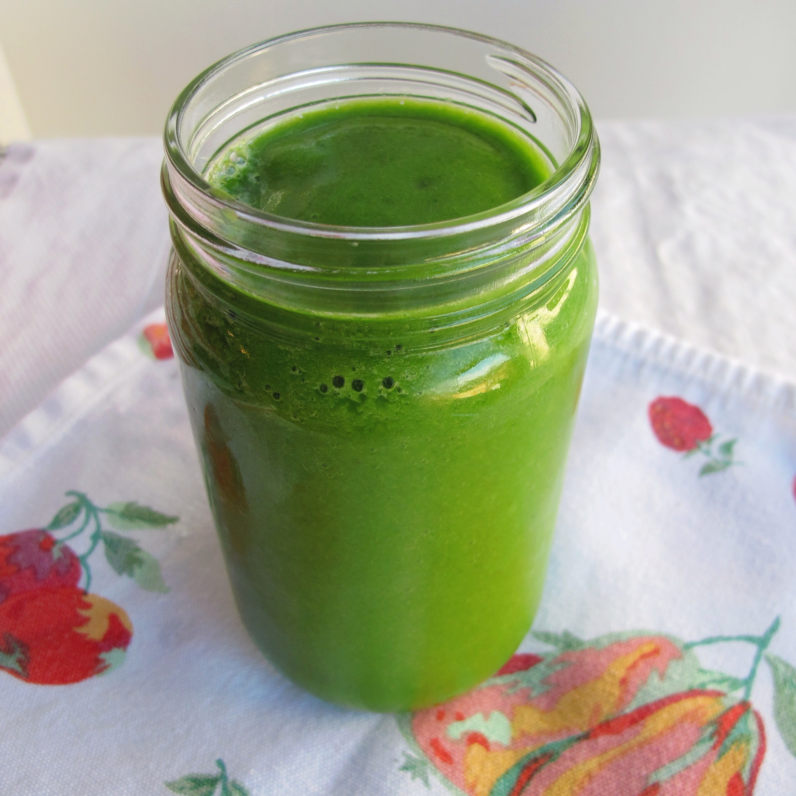

Grass Smoothie Recipe

This Smoothie is a great way to slap yourself in the morning
If you ate dirt as a kid, this one is for you
*We are not responsible for any terrible side effects from making this*
What You Need:
- 3 Cups of Fresh Mowed Grass
- 1.5 Cups of Tree Sap Any Variety
- 1/3 Cup Love
How to Make:
- Chew Fresh Grass Before Adding Into Blender
- Spit Grass Into Cup While Pouring Sap
- Pump 3 Kilos of Love Inside
- Blend and Good to Go
You Could Always mix it up with adding fresh chunks of Dirt or Leaves!
Home